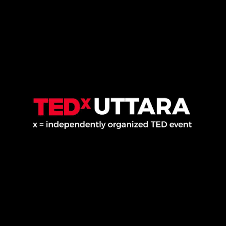
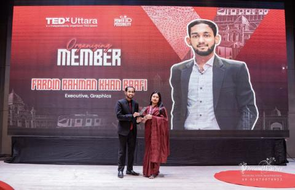
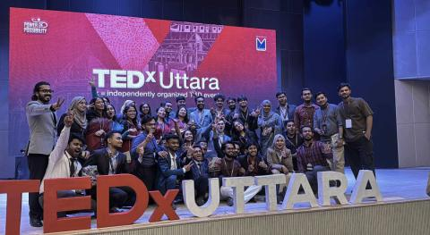
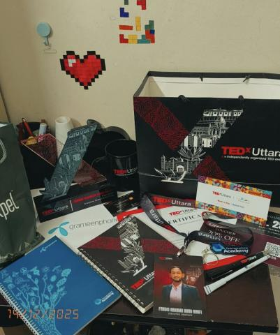

Leadership & Community
Building networks, guiding peers, and maintaining brand consistency across impactful student organizations and corporate initiatives.

TEDxUttara
Graphic Designer & Branding Expert
Key Responsibilities:
- Designed high-quality digital and print marketing materials aligned with TEDx global brand guidelines.
- Collaborated closely with the Marketing Department to ensure cohesive branding and effective campaign execution.
- Maintained brand consistency across all event-related visual assets and promotional materials.
- Developed print-ready designs, including banners, backdrops, standees, certificates, and other event collateral.
- Coordinated with multiple teams to ensure timely delivery of creative assets under tight deadlines.



BUBT Career Guidance Office
Head of Corporate & Alumni Relations
Selected to serve in a leadership capacity within the BUBT Career Guidance Office, dedicating time and skills to support the student body's professional growth and career readiness. Acted as a bridge between current students, university alumni, and the corporate sector.
Key Responsibilities:
- Network Development: Spearheaded initiatives to build and expand robust professional networks, successfully connecting current BUBT students with alumni and corporate partners.
- Career Support & Mentorship: Guided and supported peers in exploring potential career paths, identifying opportunities, and preparing for future professional endeavors.
- Corporate Engagement: Managed corporate relations to help facilitate career-focused events, workshops, and opportunities for the student body.
- Alumni Relations: Fostered and maintained strong relationships with university alumni to build a supportive community and generate mentorship opportunities for upcoming graduates.


Rotaract Club Of Dhaka Dynamic
Secretary
Had joined This club in September 2023 just to do something more meaningful than sitting around. And now, its a part of my life. Grateful for all the experiences, and knowledge i got to attain from this journey. Looking forward to serving even better in my new role as Secretary.


BUBT Social Welfare Club
Media & Publications Secretary
It's an honour for me to be elected as the Media and Publications Secretary of BUBT Social Welfare Club. My contribution has been acknowledged now that everyone voted for me in the first election of BUBT Social Welfare Club, As the Media and Publications Secretary my work responsibilities will be to:
- Manage all branding identities across all media.
- Manage brand consistency of all promotional elements.
- Represent BUBT Social Welfare Club on all partnership responsibilities I can achieve.
- Manage and guide the media team in all the departments including in content moderation, creatives, anchors, scripts, brand partnership, MoUs etc.


Adviza International
Marketing Intern - Branding
I have joined Adviza International as a Marketing Intern, GD & Branding Expert. My duty will include managing all branding materials for the company and designing successful branding campaigns across all social sites.
Leo Club of Dhaka Platinum Unique
Media & Publications Coordinator
Directed the media presence, visual communications, and publication initiatives for the Leo Club of Dhaka Platinum Unique. Tasked with managing digital content and promotional materials to amplify the club's community service efforts and outreach programs.
Skill Catalyst Bangladesh
Graphics Designer & Campus Ambassador
Served as Graphics Designer (May-Nov) and Campus Ambassador (Mar-May). Designed key visual assets including Announcement Cards, Head of Design Team materials, and General Meeting collateral.
BUBT Business Club
Sub Executive Member
My Contributions:
- Created Bizz Master S1 - All materials, Logo
- Created the Hult Prize 2024 identity
- Designed all visuals for all events from 2023 to 2025 March


Youth School for Social Entrepreneurs (YSSE)
Business Development Intern & Youth Ambassador
Conducted strategic market research to identify growth opportunities. Developed community engagement strategies, increasing outreach. Recognized as Quiz Winner and Intern of the Month. My team was the winner of the Presentation Competition.
"Excited to start my journey as a Youth Ambassador at YSSE! Looking forward to contributing to youth empowerment and making an impact. Let’s grow together! ✨ #YSSE"


LEAD Academy & Hult Prize at BUBT
Lead Luminary 4.0 & Brand Designer
Selected to serve as a Lead Luminary and Campus Ambassador for Lead Academy's 4.0 Cohort. Acted as a primary liaison between the organization and the university student body, driving engagement and promoting skill-development initiatives on campus.
For Hult Prize: Event Branding & Collateral, Content Development, and Visual Communication Strategy. Crafted engaging promotional graphics to drive student engagement and highlight participant achievements.


Creative IT Institute
Campus Ambassador
- Campus Representation: Acted as the primary liaison between Creative IT Institute and the student body, promoting professional IT training programs and industry-standard workshops.
- Strategic Outreach: Executed on-campus marketing initiatives and social media campaigns to increase brand visibility and engagement.
- Event Coordination: Facilitated the organization of seminars and technical sessions.
- Community Building: Collaborated with the central marketing team to identify growth opportunities and gather student feedback.